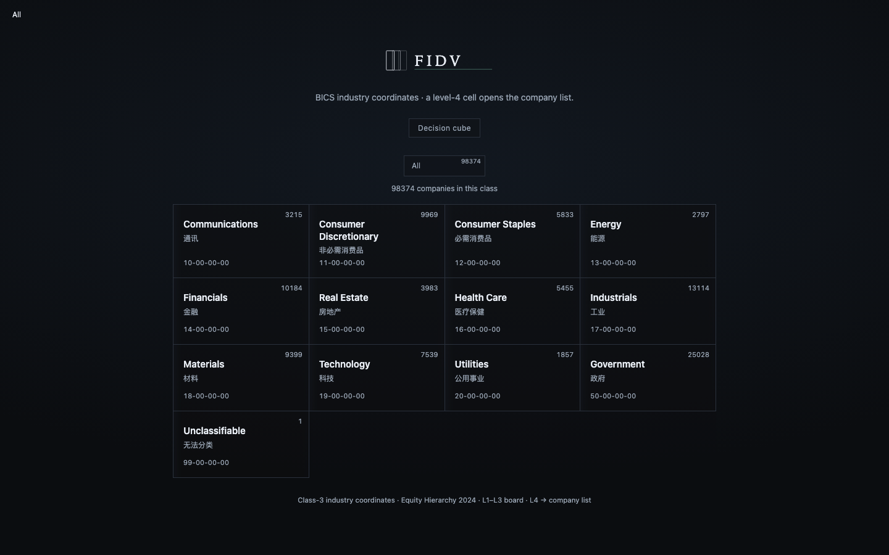
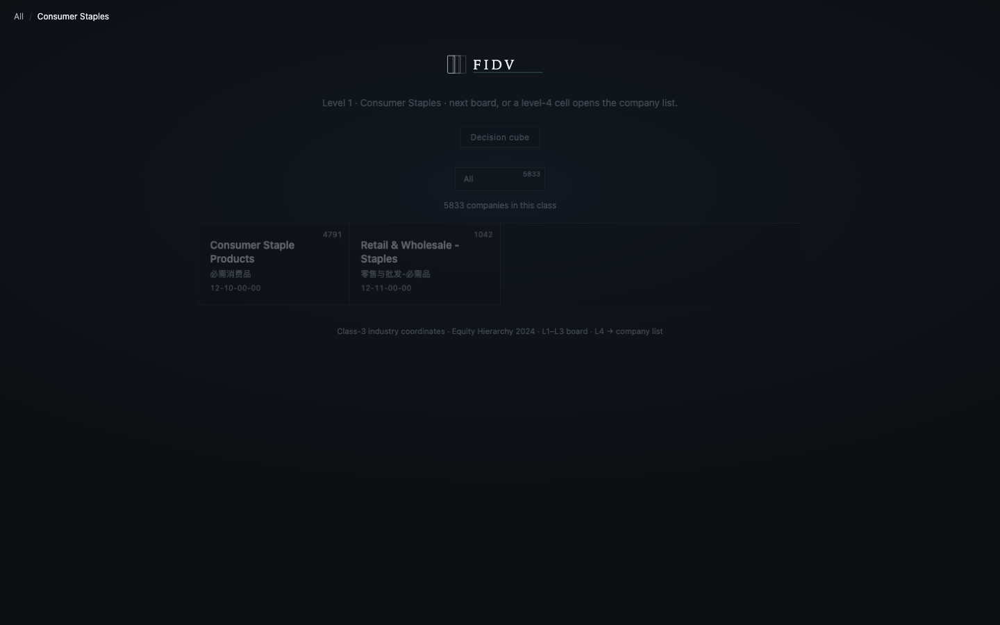
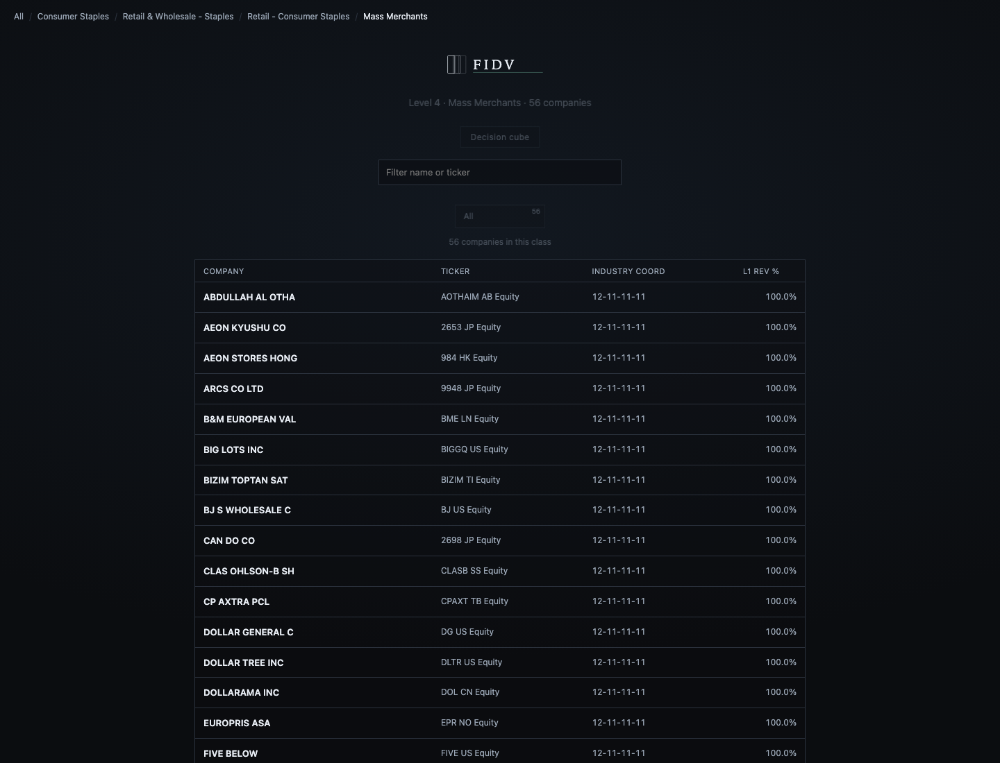
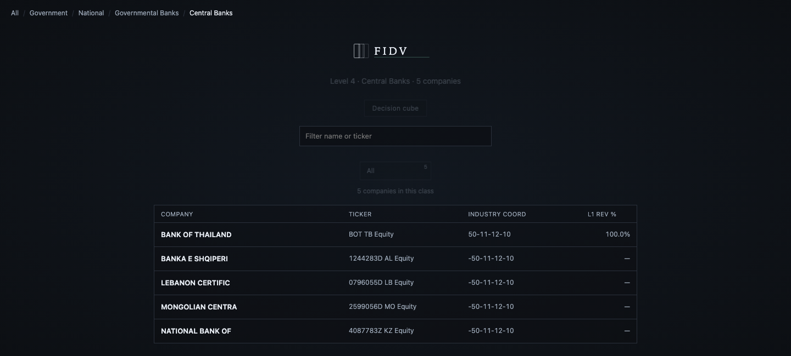
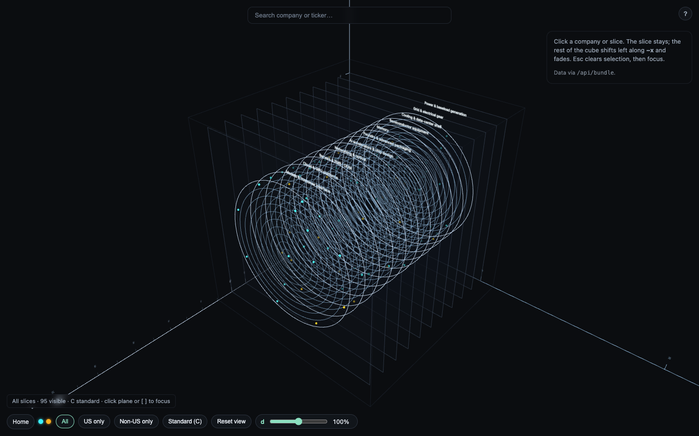

浏览器打开本页 → 打印 → 纸张 A4 横向 → 存储为 PDF。关掉页眉网址。配图在 library/showable-report/briefing/assets/。依据：同目录 First product discussion.pdf、工程发展史、工作日志 #1–#95。
队员会
Financial Information to Decision Visualization
金融信息如此之多，如何轻易了解最重要的信息从而做决定。方法是可视化。
计划书只讲一块：人工智能产业链债务风险。没功夫做太多。
Standard-Cube.app · http://127.0.0.1:8787/先做出一些东西再交流。一个人想东西比较自成体系——希望你们理解。
但不告知，会让人迷茫，也会磨掉一开始的热情。所以今天三件事：
不点名分工。末页留空给你们写。
新造一套「可靠财务指标」太难。好的指标既简洁又有逻辑，才有公信力。我们不完全懂会计条例，也不完全懂风险评估体系，做不出服众的指标。
所以后来潜心做可视化的基础：本地与 GitHub、前后端分离、分类体系、坐标体系。
| 分类 | 立方体 | |
|---|---|---|
| 地址 | / 与 /list?bics= | /cube |
| 标准 | 彭博 BICS。库内七级；后三级还不能公式导出。现用四级。 | 切片是早期智能体按网上知识搭的，不是 BICS 门厅。 |
| 公司 | 点板块进名单；可按上市国筛 | 几个点球。喂过一点数据，指导少。 |
页眉一枚 Decision cube 可以从分类进立方体。
| 类 | 名字 | 干什么 |
|---|---|---|
| 1 | 位置坐标 (s, x, y) | 立方体里唯一摆放语言。电力在后（小 s），模型在前（大 s）。 |
| 2 | 相对坐标 ringCos / ringSin | 切片上的营收环。圆心=该层营收最大。不要叫 x/y。 |
| 3 | 行业坐标 legalEntityCoord | BICS。存 7×2，如 12-11-11-11-00-00-00。门厅只画前 4 段。立方体上不画。 |
空 % Tot Rev 不当 100。仍进名单时，企业坐标前加负号：-50-11-12-10。格子上的节点坐标不加负号。

点板块找公司。约 98374 家（含空占比胜出）。Government 约 25028。四段坐标，如 12-00-00-00。

还没到四级时仍是分类格，不是立方体。Consumer Staples 已由 20261005 十四份 L4 表摄入。

一企一行。身份=完整 Member Ticker。主业=最大 % Tot Rev。3 类坐标只显示前 4 段。

有数字的仍赢（BOT 100%，坐标无负号）。空占比进名单，坐标前有「-」，占比列是 —。不把空填成 100。

切片 + 10 环营收 + 荧光点。点点来自早期演示链 companies.json，还不是门厅那张 BICS 公司表。空间是 s, x, y。
| 路径 | 认作 |
|---|---|
Standard-Cube.app | 集成启动窗（Open / Restart / Quit · 8787；无终端） |
ind-chain/ | 可运行产品 |
class-3-coords/ | BICS 2024 七级库 |
DATA-SPACE/ | 彭博导出与 BQL 手册 |
agents/ 与 agent_tasklist/ | 子代理一一对应 |
library/ | 书记：worklog |
library/showable-report/ | 秘书：读本与讲稿 |
library/bug-report/ | 运维：ops-log |
总参谋部 / 总监 / 书记平级，互不调用。电 → 总参谋部最先。总监对照三条理念。美工部、信息部可被总参谋部调度。新 agent 可以加，但要精简。
我自己哪一门代码都不精通。大家不必有压力。
彭博本月 API 调用量用完，申请类数据导不出。看还可以；静态还可以导。
任务本阶段是写计划书。数据的广度、精确度，现在不是最必要。数据活也可以少干——这是好事儿。
接下来大约 8～9 天叫工程导向。最终留三四天写计划书上交。
| 意思 | |
|---|---|
| 不够好看 | 环喧宾夺主；切片多此一举；点球不明；主题偏暗，导出报告不友好；按钮仍多。 |
| 不够方便 | 点球太小；拖动麻烦；选中公司之间的联系怎么画；分类点到公司再进 cube 怎么切。 |
| 不够标准 | 先做 cube 后做分类。切片分类与公司是网上/AI 自搭，财务也多来自网，不是 BICS 门厅那套。 |
| 信息不够多 | 要集成化地展现。收入/支出关系与组成、资产负债、固定支出须有。旧利息本金表很占地方。 |
分类后做，但 agent 工作流跑通后，门厅效果反而好一些。
| 轴 | 要一起想的 |
|---|---|
| 可视化 | 在现框架上改，对准计划书。同一信息同一源、同一源同一库。分类 → cube 怎么跳。债务可视化应回同一立方体，不要孤页。 |
| Teamwork | 写了一串能不能提交 GitHub；要不要过 pull check。我查不了那么多代码。要不要副本库。需要一个方案把流程理清。 |
你们还有新的，就问出来。我答不上来的，就是还要继续发展的地方。
自己写名字和题目。不预先点名。